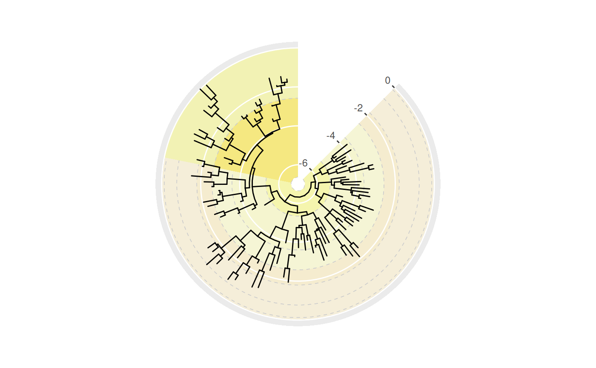

Enhanced polar coordinate system with geological timescale
Source:R/coord_geo_radial.R
coord_geo_radial.Rdcoord_geo_radial behaves similarly to ggplot2::coord_radial() in that it
occurs after statistical transformation and will affect the visual appearance
of geoms. The main difference is that it also adds a geological timescale to
the background of the plot. coord_geo_radial is similar to
coord_geo_polar() but has more options related to the polar coordinate
plotting that are inherited from ggplot2::coord_radial() (e.g., end,
r_axis_inside, inner.radius). Furthermore, unlike coord_geo_polar,
coord_geo_radial uses the ggplot2 internals to draw the r and theta
axes, gridlines, etc. This means that users can tweak the
guide and theme settings for these
features (see examples).
Usage
coord_geo_radial(
dat = "periods",
theta = "y",
start = -0.5 * pi,
end = 1.25 * pi,
expand = TRUE,
direction = 1,
reverse = "none",
r_axis_inside = NULL,
inner.radius = 0.05,
fill = NULL,
alpha = 1,
lwd = 0.25,
color = "grey80",
lty = "solid",
lab = FALSE,
abbrv = TRUE,
skip = c("Quaternary", "Holocene", "Late Pleistocene"),
neg = TRUE,
prop = 1,
textpath_args = list(),
clip = "off",
rotate_angle = FALSE
)Arguments
- dat
Either A) a string indicating a built-in dataframe with interval data from the ICS ("periods", "epochs", "stages", "eons", or "eras"), B) a string indicating a timescale from macrostrat (see list here: https://macrostrat.org/api/defs/timescales?all), or C) a custom data.frame of time interval boundaries (see Details).
- theta
variable to map angle to (
xory)- start
Offset of starting point from 12 o'clock in radians. Offset is applied clockwise or anticlockwise depending on value of
direction.- end
Position from 12 o'clock in radians where plot ends, to allow for partial polar coordinates. The default,
NULL, is set tostart + 2 * pi.- expand
If
TRUE, the default, adds a small expansion factor to the limits to prevent overlap between data and axes. IfFALSE, limits are taken directly from the scale.- direction
1, clockwise; -1, anticlockwise
- reverse
A string giving which directions to reverse.
"none"(default) keep directions as is."theta"reverses the angle and"r"reverses the radius."thetar"reverses both the angle and the radius.- r_axis_inside, rotate_angle
![[Deprecated]](figures/lifecycle-deprecated.svg)
- inner.radius
A
numericbetween 0 and 1 setting the size of a inner radius hole.- fill
The fill color of the background. The default is to use the
colorcolumn included indat. If a custom dataset is provided withdatwithout acolorcolumn and without fill, a greyscale will be used. Custom fill colors can be provided with this option (overriding thecolorcolumn) and will be recycled if/as necessary.- alpha
The transparency of the fill colors.
- lwd
Line width for lines between intervals. Set to
NULLto remove lines.- color
The color of the lines between intervals.
- lty
Line type for lines between intervals.
- lab
Whether to include labels. Requires the
geomtextpathpackage.- abbrv
If including labels, whether to use abbreviations instead of full interval names.
- skip
A vector of interval names indicating which intervals should not be labeled. If
abbrvisTRUE, this can also include interval abbreviations.- neg
Set this to true if your theta-axis is using negative values. This is usually true if you are using
ggtree.- prop
This is the rotational proportion of the background that the scale takes up.
- textpath_args
A list of named arguments to provide to
geomtextpath::geom_textpath(). Only used iflabis set toTRUE. Useful arguments includecolor(font color),family(font family),fontface,hjust(radial adjustment), andsize(font size).- clip
Should drawing be clipped to the extent of the plot panel? A setting of
"on"(the default) means yes, and a setting of"off"means no. For details, please seecoord_cartesian().
Details
If a custom data.frame is provided (with dat), it should consist of at
least 2 columns of data. See data(periods) for an example.
The
max_agecolumn lists the oldest boundary of each time interval.The
min_agecolumn lists the youngest boundary of each time interval.The
abbrcolumn is optional and lists abbreviations that may be used as labels.The
colorcolumn is optional and lists a color for the background for each time interval.
dat may also be a list of values and/or dataframes if multiple time scales
should be added to the background. Scales will be added sequentially starting
at start and going in the specified direction. By default the scales will
all be equal in circular/rotational proportion, but this can be overridden
with prop. If dat is a list, fill, alpha, lwd, color, lty,
lab, abbrv, skip, neg, prop, and textpath_args can also be lists
(N.B. textpath_args would be a list of lists). If these lists are not as
long as dat, the elements will be recycled. If individual values (or
vectors) are used for these parameters, they will be applied to all time
scales (and recycled as necessary).
If the sum of the prop values is greater than 1, the proportions will be
scaled such that they sum to 1. However, the prop values may sum to less
than 1 if the user would like blank space in the background.
Care must be taken when adding labels to plots, as they are very likely to
overlap with the plot under the default settings. The textpath_args
argument can be used to adjust the settings for the plotting of the labels.
See geomtextpath::geom_textpath() for details about the available
arguments. Also note that the curvature of the labels may vary based on the
distance from the origin. This is why abbrv is set to TRUE by default.
Examples
library(ggplot2)
library(ggtree)
set.seed(1)
tree <- rtree(100)
# single scale
revts(ggtree(tree)) +
coord_geo_radial(dat = "stages") +
scale_y_continuous(guide = "none", breaks = NULL) +
theme_gray()
#> Scale for y is already present.
#> Adding another scale for y, which will replace the existing scale.
# multiple scales
revts(ggtree(tree)) +
coord_geo_radial(
dat = list("stages", "periods"), alpha = .5,
prop = list(0.75, .25), start = pi / 4, end = 2 * pi, lty = "dashed"
) +
scale_y_continuous(expand = expansion(mult = c(0.02, 0.02)),
guide = "none", breaks = NULL) +
theme_gray()
#> Scale for y is already present.
#> Adding another scale for y, which will replace the existing scale.

library(ggplot2)
library(paleotree)
data(RaiaCopesRule)
ggtree(ceratopsianTreeRaia,
position = position_nudge(x = -ceratopsianTreeRaia$root.time)) +
coord_geo_radial(dat = "stages") +
scale_y_continuous(guide = "none", breaks = NULL) +
theme_classic()
#> Scale for y is already present.
#> Adding another scale for y, which will replace the existing scale.